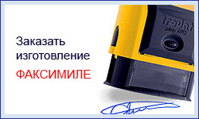
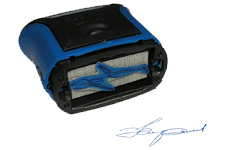

|
988-14-14 Факсимиле

Определение
Факсимиле в переводе с латыни — снимок с чьей-то руки, с письма.
В нашем с вами случае, уважаемые дамы и господа, факсимиле (факсимильная печать) — это клише подписи в натуральную величину, призванное упростить жизнь вам и вашим подчиненным.
Правовые аспекты и рекомендации
Гражданский кодекс РФ. Статья 160 ч.2 Письменная форма сделки
Использование при совершении сделок факсимильного воспроизведения подписи с помощью средств механического или иного копирования, электронно-цифровой подписи либо иного аналога собственноручной подписи допускается в случаях и в порядке, предусмотренных законом, иными правовыми актами или соглашением сторон.
Но в соответствии в с п. 3 ст. 2 ГК РФ к имущественным отношениям, основанным на административном или ином властном подчинении одной стороны другой, в том числе к налоговым и другим финансовым и административным отношениям, гражданское законодательство не применяется, если иное не предусмотрено законодательством.
Также есть Федеральный Закон "О бухгалтерском учете", где пп. "ж" п. 2 ст. 9, гласит, что положения по ведению бухгалтерского учета и бухгалтерской отчетности в РФ, утвержденного Минфином РФ, содержат требования о том, чтобы подпись уполномоченных лиц на первичных документах была собственноручной.
Таким образом, факсимиле можно использовать на документах, которые не подразумевают материальную ответственность. Для того чтобы максимально застраховать себя от незаконного использования факсимиле, желательно составить инструкцию по его использованию.
В ней необходимо четко прописать:
- Лицо, ответственное за хранение факсимиле.
- Четкий перечень документов, на которых может быть поставлено факсимиле.
- Список лиц, которые имеют право использования факсимиле.
- Контрольный образец оттиска факсимиле.
Использование
Факсимиле рекомендуется использовать на автоматической оснастке т.к. она оставляет более равномерный и несмазанный оттиск.
Если Вы предполагаете частое использование факсимиле, то советуем остановить свой выбор на красконаполненной технологии. Если же предполагается использование факсимиле сотрудниками, но в Вашем присутствии, то обратите внимание на тот факт, что автоматическая оснастка достаточно шумная и возможно будет Вас отвлекать от работы. Следует отметить, что знающий человек непременно отличит факсимиле от настоящей подписи. Особенно если подписывать однотипные документы, например банковские платежки.
Заказ факсимиле
Вы можете заказать изготовление факсимиле по факсу или электронной почте.
Для оформления заказа по электронной почте необходимо прислать нам на адрес: zakaz@pechati.ru файл формата jpg, gif c отсканированной подписью с разрешением 300dpi в НАТУРАЛЬНУЮ величину.
НЕ НАДО:
- Сканировать с разрешением выше 300dpi (это не улучшит качество будущего факсимиле т.к. оно всё равно будет прорисовано нами целиком заново)
- Изменять геометрические размеры изображения.
- Присылать не упакованное растровое изображение (формат bmp),
В письме необходимо указать:
- Сроки выполнения заказа;
- На какой оснастке Вы хотите получить Ваше факсимиле;
- Что ещё из штемпельной продукции Вам необходимо: штемпельная подушка, штемпельная краска...
- Контактную информацию: телефон, имя ответственного за заказ, место и время доставки, если доставка осуществляется нашим курьером.
 Заказать изготовление факсимиле Заказать изготовление факсимиле
Информация
|